Returns version string of the active 24U SimpleDialog Plug-In, formatted as requested by the parameter.
| versionFormat | Defines the format of the returned version. |
| "short" | To get just the version number. Default value. |
| "long" | To get the plug-in name followed by its version number. |
| "platform" | To get the platform of the code currently running on. |
| "autoupdate" | To get autoupdate compatible (comparable) version number. |
| "bit" | To get bit version of plugin. |
This function is very important and it has the same output format in all 24U Plug-Ins. You should call this function every time you need to check if the plug-in is properly installed to the FileMaker® Pro. Even if the plug-in is not registered (or badly registered) this function should work. Calling this function in the startup script of your solution is recommended.
Returns requested version format or platform. If this function returns "?", the plug-in is not properly installed or FileMaker Pro cannot load and activate it for some reason.
SDialog_Version( "long" )
This will return the plug-in name and its version. For example "24U SimpleDialog Plug-In 6.0".
SDialog_Version( "platform" )
Returns "Mac OS X", "iOS" or "Windows" depending on the platform the plug-in is currently running.
SDialog_Version( "autoupdate" )
Returns "05040300" for the plug-in version 5.4.3. The last two digits represent the build number. In this case it means build 00 (first build) of version 5.4.3.
Provides special functionality to operate with plugin serial numbers.
| SerialNumber | Register given SerialNumber and return an error code. |
| EmailAddress | Tries to activate with given email address and return an error code. Not supported in iOS version and will return error -4 Not implemented. |
| "Registration window" | Show the "Registration window" and return 0. Not supported in iOS version and will return error -4 Not implemented. |
| "About window" | Show the "About window" and return 0. Not supported in iOS version and will return error -4 Not implemented. |
| "Status" | Return the actual registration state of the plugin: Demo, Demo expired, Trial, Trial Expired, Registered or Dead. It may return different values in client solutions and server side scripts, depending on the types of licenses the product is registered with. iOS version returns only one of two states: "Registered" or "Unregistered". |
| "Unregister" | Unregister all serial numbers related to the product and return an error code. |
Use this function to register or unregister 24U SimpleDialog Plug-In, to get information about current registration state, or to invoke GUI providing basic registration information and purchase capabilities.
Returns zero or error code depending on the selector.
SDialog_Register( "SDI60I-BXMWC-VNW7W-L8AJS-3KGX3-VWG84" )
This function will register the iOS plug-in with serial number SDI60I-BXMWC-VNW7W-L8AJS-3KGX3-VWG84.
SDialog_Register( "SDI60C-BXMW-VNW7-L8AJ-3KGX-VWG8" )
This function will register the plug-in with client serial number SDI60C-BXMW-VNW7-L8AJ-3KGX-VWG8 for 16 users.
SDialog_Register( "user@mail.com" )
In case you do not have a serial number but you want to try the plug-in out, use the string with your email address as selector.
SDialog_Register( "unregister" )
This function will unregister every serial number related to 24U SimpleDialog Plug-In.
SDialog_Register( "About window" )
Similar to opening FileMaker Pro preferences, navigating to the Plug-Ins tab and double-clicking on 24U SimpleDialog Plug-In.
Note: All serial numbers here are only for demonstration purposes. They will not work in the plug-in.
Generates and shows custom dialog.
Note: Styles for buttons, labels etc. are not supported in iOS version and those styles will be ignored.
| dialogPrompt | Text to be displayed as dialog prompt. The prompt is partially style sensitive: text color, size and face (not font) will be used in the dialog. |
| dialogButtons | The names of dialog buttons, right to left, separated by "¶". If this parameter is omitted dialog will have no buttons. The default value is "" empty string which has special meaning: generate buttons OK and Cancel. |
| dialogItems | Description of each dialog field. The syntax is: dialogItems = itemOptions { { ; valueIDs } ; valueList } ; currentValue. See next table to learn how to construct fields. |
| itemOptions | ItemOption consists of itemKind, itemName and moreOptions parameters. All parameters are delimited by "¶". See next table for detailed description. |
| valueIDs | Value list (delimited by "¶") containing IDs for menu or list. |
| valueList | Value list (delimited by "¶") containing values for menu or list. |
| currentValue | Default value for the field. |
| itemKind | The kind of field. The list of field kinds is in the next table. |
| itemName | The name of the item. Usually it is a text title on the left of the field, on the right of the checkbox or radio. |
| moreOptions | Some special options. The format is always optionName=optionValue. See the last table to learn which options can be used in conjunction with which field. |
| "text" | One line edit box. Use currentValue parameter to specify initial value. |
| "password" | One line edit box which hides characters you are typing. Use currentValue parameter to specify initial value. |
| "radio" | One radio button. CurrentValue 1 will set it, 0 will unset it. Radio has a global scope for whole dialog. |
| "checkbox" | One checkbox. CurrentValue 1 will set it, 0 will unset it. On Mac, CurrentValue 2 will set it to the mixed state. |
| "menu" | Dialog pop-up menu. Use parameters valueList and valueIDs to set its contents. CurentValue can be text or number. Number specifies which line of valueList should be the default. 0 or 1 means the first line, 2 is the second line and so on. If you place text to the currentValue, it will either select line from valueList with the same string or it sets initial text of the menu which will disappear when you select the menu. If you define single "-" on one line inside ValueList parameter, the plug-in will draw a separator line between menu lines. This separator line has no index. You can add or remove any number of separator lines and index number in CurrentValue parameter will point to the same line. Separators are not paired with ValueIDs. |
| "list" | Dialog selection list. Use parameters valueList and valueIDs to set its contents. CurentValue can only be a number that specifies which line of valueList should be the default. 0 or 1 means the first line, 2 is the second line and so on. |
| "textarea" | Multi-line edit box. Similar to text but the field can contain multiple lines and pressing enter while you are in textarea will not cause pressing default button. Tab key inserts tab character and it does not shift focus to the next field. |
| "caption" | Static text label. Use currentValue parameter to fill its contents. The caption is partially style sensitive: it reads text color, size and face (not font) from FileMaker Pro text. |
| "separator" | Static line which divides parts of dialog. Do not use currentValue parameter. |
| "image" | Image which should be placed to the dialog. The currentValue parameter should contain a container with image. |
| "link" | The parameter itemName should contain URL and currentValue text description of the link. The link will be shown on the dialog with blue color. |
| validation=NONE | Do not validate the field contents. This is the default value. | ||||||||
| validation=CREDIT_CARD | Check if text field contains credit card number. If validation fails dialog will not be closed by the default button. | ||||||||
| validation=SSN | Check if text field contains social security number. If validation fails dialog will not be closed by the default button. | ||||||||
| validation=SIN | Check if text field contains social insurance number. If validation fails dialog will not be closed by the default button. | ||||||||
| validation=CZECH_ID | Check if text field contains Czech ID number. If validation fails dialog will not be closed by the default button | ||||||||
| validation=REGEXP | Validate field content against regular expression. Write regular expression to the next line. If validation fails dialog will not be closed by the default button. | ||||||||
| validation=FILEMAKER | Validate field content against FileMaker Pro calculation. To get the field content inside the calculation use "x" (see example). If calculation returns non-zero number it pass if it returns 0 it failed. If it returns text it will be shown inside small message box dialog. | ||||||||
| lines=<number> | For 'TextArea': the number of lines available. TextArea must have at least 4 lines. For 'List': a maximum number of lines shown. | ||||||||
| minlines=<number> | For 'List' it is a minimum number of lines to be shown. Following table shows how many lines of list are shown on dialog based on values of "lines", "minlines" and actual count of items in list:
|
||||||||
| focus=1 | Put initial focus to this field. |
This is the main function of 24U SimpleDialog Plug-In. Various types of dialogs can be created by this function. From simple ones similar to FileMaker Pro built in function to very complex, form-like dialogs with pictures. Dialog content is initially set by this function parameters and can be modified while the dialog is opened by function SetCalculation. The validation option can be used for all fields except caption, separator, image.
All dialog fields will mimic the text style from the FileMaker Pro. If you want to change text size, color, font or style just change it inside your FileMaker Pro solution or use text formatting functions from FileMaker Pro calculation engine. The plug-in is not able to mimic the style of each character. The style of the first character is applied on whole dialog part: On whole caption, title, button etc...
24U SimpleDialog Plug-In 3.x used incompatible indexing for field "menu". Menu indexing has been 0-based (0 first line, 1 second line...) in version 3.x. This has been changed in version 4.0 to 1-based indexing (1 first line, 2 second line...). Solutions which used 0-based indexing must be changed to 1-based indexing. The only compatible number is 0 - it means the first line in both cases.
In 3.x the menu also supported line separators (character "-" placed alone in single line) but separators had indexes. This also changed in 4.0 - separators no longer have indexes and it can be freely added or removed without breaking CurrentValue meaning.
Function shows the dialog if parameters are correct and when the dialog is closed it returns 0. Otherwise it does not show dialog and it returns status code. See status code list at the end of this file.
This is list of known limitations for this function:
SDialog_InputDialog( "Super Simple Dialog" )
This command will show the most simple "dialog". The dialog will have no buttons and no fields. It can be closed by esc key or you can set timeout to close via SDialog_Set( "dialog-timeout" ; timeout ).
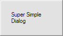 |
SDialog_InputDialog( "Simple with buttons" ; "First¶Second" )
This will create simple dialog with no fields. The dialog will contain two buttons with labels "First" and "Second".
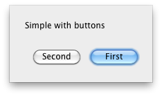 | 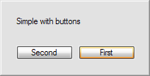 | 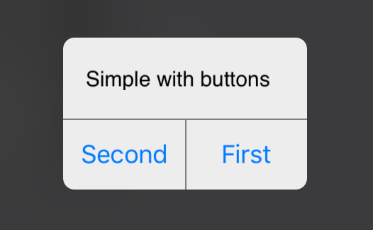 |
SDialog_InputDialog( "Dialog with one text field" ; "" ; "text¶textField" ; "Initial Text" )
This will create a dialog with default buttons Ok and Cancel and one text field with label "textField" containing "Initial Text".
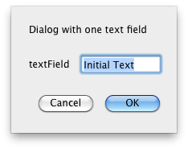 | 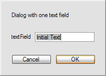 | 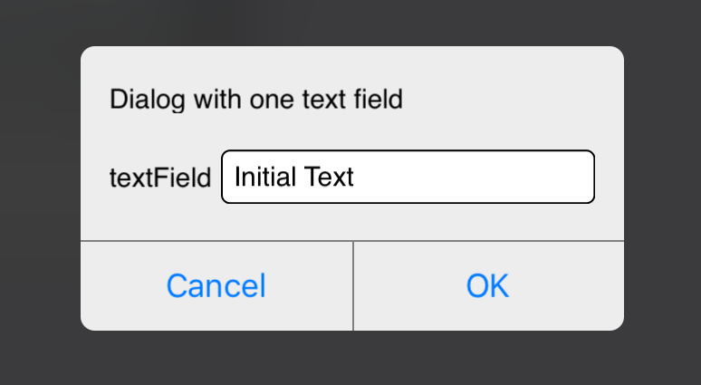 |
SDialog_InputDialog( "Complex dialog" ; "Ok¶Cancel¶Yes¶No¶WTF?" ; "caption¶Name:" ; "Very complex dialog" ; "text¶textField" ; "Important text field" ; "separator" ; "textArea¶Description¶lines=8" ; "Write description here..." ; "menu¶priority" ; "Very High¶High¶Normal¶Low¶Very Low" ; "Choose priority..." ; "checkbox¶Is it complex enough?" ; 0 )
This will create a complex dialog with several text boxes, separator, pop-up menu and five buttons. See how moreOptions parameter is used in textArea field.
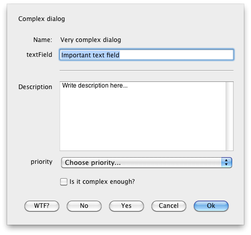 | 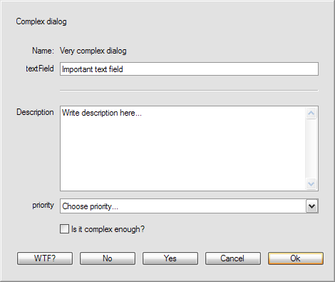 | 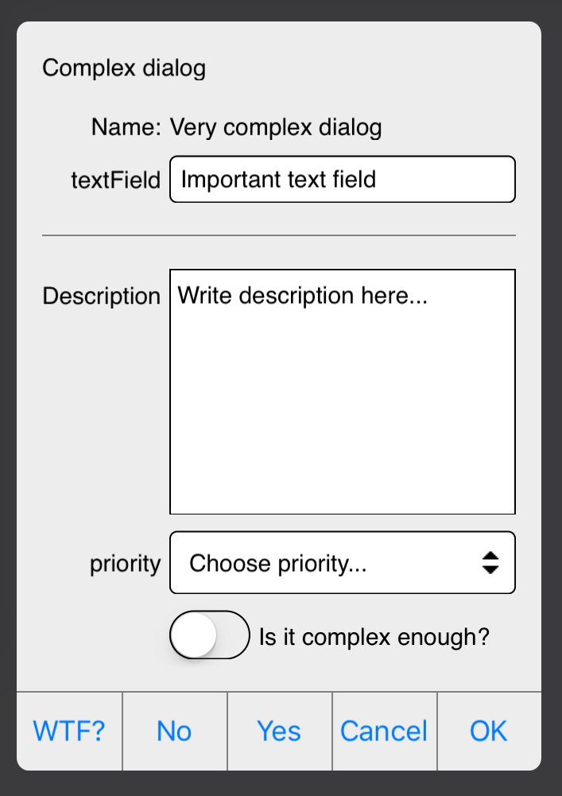 |
SDialog_InputDialog( "Menu ValueID versus Value" ; "" ; "menu¶priority" ; "11¶8¶6¶4¶1" ; "Very High¶High¶Normal¶Low¶Very Low" ; "Choose priority..." )
This will create a simple dialog which contains a menu. You will see Very High, High etc. in menu but when you call SDialog_Get( "dialog-value" ; 1 ) you will obtain the number from valueIDs.
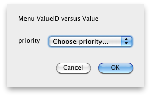 | 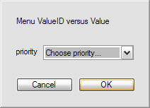 | 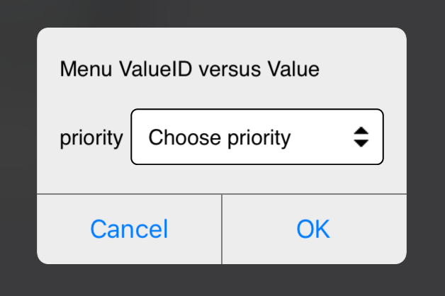 |
SDialog_InputDialog( "Enter a number" ; "" ; "text¶Number¶validation=REGEXP¶^[0-9]+$" ; "")
This will create a dialog which contains default buttons Ok and Cancel and input text field with easy regular expression validation for numbers.
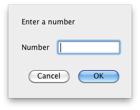 | 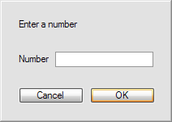 | 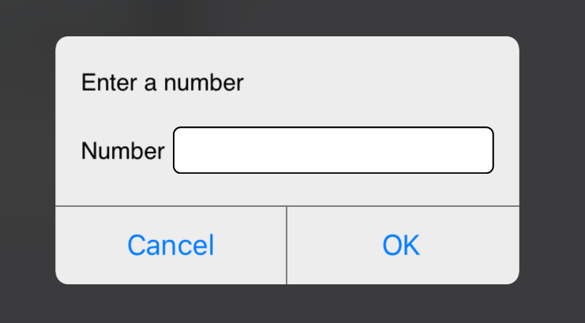 |
SDialog_InputDialog( "Click the following link:" ; "OK" ; "link¶http://www.24usoftware.com" ; "24U official webpage" )
This will create a simple dialog which contains button OK and link to the 24U Software official website.
Shows progress bar dialog.
Note: SDialog_ProgressDialog is not supported in iOS version.
| dialogNumber | The index number of progress bar dialog if multiple progress bar dialogs are needed. If omitted the progress dialog with number 0 will be used. The number is fully selectable by user. That means, user can open three progress dialogs with indexes 0,2,5 or 1,2,3 with the same final result. |
| action | The action to do with selected progress dialog. |
| actionData | Additional data for selected action. Mostly number or text values. |
| "open" | Open default or selected progress bar dialog. |
| "close" | Close default or selected progress bar dialog. ActionData may contain the index number of progress bar dialog user wants to close or string "all" which cause all progresses on the screen will be closed. |
| "show" | Open default or selected progress bar dialog. |
| "stop" | Close default or selected progress bar dialog. ActionData may contain the index number of progress bar dialog user wants to close or string "all" which cause all progresses on the screen will be closed. |
| "value" | Set actionData value as a new current value for default or selected progress bar. The number should be the same or higher than current minimum and lower than current maximum value. |
| "newmin" | Set actionData value as a new minimum value for default or selected progress bar. ActionData should contain new progress minimum. If the number is equal or higher than actual maximal value, the progress switches to indeterminate. |
| "newmax" | Set actionData value as a new maximum value for default or selected progress bar. ActionData should contain new progress maximum. If the number is equal or lower than actual minimal value, the progress switches to indeterminate. |
| "text" | Set actionData text as a new message above the progress bar of default or selected progress dialog. |
| "subtext" | Set actionData text as a new message under the progress bar of default or selected progress dialog. |
| "incr" | Add actionData value to the current value of default or selected progress bar dialog. |
| "update" | Update progress bar parameters for default or selected progress bar dialog. Works only when progress bar dialog is already open. |
| "wait" | Set actionData as a wait time ( in seconds ) for default or selected progress bar dialog. ActionData number may be a fraction, for example 1.5 second can be set. |
actionData = { minValue ; maxValue { ; curValue } ; } { topMessage { ; bottomMessage } { ; pauseResumeScript } { ; cancelScript } }
Note: if minValue is the same or higher as maxValue then indeterminate progress bar will be opened.
actionData = { { minValue ; maxValue ; } curValue ; } { { topMessage ; } bottomMessage }
Note: if not specified, value or text remains unchanged.
| minValue | Minimum value of the progress bar. If not set, default value 0 will be used. |
| maxValue | Maximum value of the progress bar. If not set, default value 100 will be used. |
| curValue | Current value of the progress bar. If not set, minValue will be used. |
| topMessage | Message to be displayed above the progress bar. If not set, no message above progress bar will be visible. |
| bottomMessage | Message to be displayed under the progress bar. If not set, no message under progress bar will be visible. |
| PauseResumeScript | FileMaker Pro script to be performed when pause/resume button is pressed.
Script receives "pause" or "resume" as parameter. Parameter "pause" is received when Pause button is pressed, "resume" is received when Resume is pressed. When this parameter isn't provided, no Pause/Resume button is displayed in dialog. |
| CancelScript | FileMaker Pro script to be performed when cancel button is pressed. Progress dialog is not automatically closed after pressing the cancel button. When this parameter isn't provided, no Cancel button is displayed in dialog. |
| 0,1,2... | Index number of progress bar dialog that user wants to close. If not set, default value 0 will be used. |
| "all" | This text closes all active progress bar dialogs. |
actionData = { increment } { ; topMessage }
| increment | Value, which will be added to the current value of default or selected progress bar dialog. If not set, default value 1 will be used. |
| topMessage | Message to be displayed over the progress bar. If not set, message remains unchanged. |
Use this function to create and maintain a dialog with progress bar. More progress bar dialogs can be displayed at the same time. The number of visible progress bar dialogs is not limited, however it is recommended to display maximum 5 of them at the same time. If two or more progress bar dialogs are open at the same place, then the last opened dialog is on the top and visible.
If parameters are correct the function will show progress dialog and immediately return 0. In the case of error, no progress is shown and status code is returned. Of iOS status code is returned in case of success.
SDialog_ProgressDialog( 4 ; "newmax" ; 500 )
This command will change maxValue for progress bar dialog with index number 4 to 500.
SDialog_ProgressDialog( "close" ; 2 )
This command will close progress bar dialog with index number 2.
SDialog_ProgressDialog( "close" ; "all" )
This command will close all actually opened progress dialog bars.
SDialog_ProgressDialog( 4 ; "incr" ; 5 )
This command will add 5 to the current value for the progress bar dialog with index number 4.
SDialog_ProgressDialog( "wait" ; 0.01 )
This command will pause progress bar dialog for 10 milliseconds.
SDialog_ProgressDialog( "open" ; 0 ; 20 ; 12 ; "Running script on server" ; "Please wait" ; "PauseResumeScript=MyPauseScript" ; "CancelScript=MyCancelScript" )
Displays ProgressDialog with minimal value = 0, maximal value = 20, actual value = 12, top message = "Running script on server", bottom message =
"Please wait", script for handling pause and resume button = "MyPauseScript" and script for handling cancel button = "MyCancelScript"
SDialog_ProgressDialog( "open" ; 0 ; 0 ; "Running script on server" ; "Please wait" ; "PauseResumeScript=MyScriptName" ; "CancelScript=MyCancelScript" )
Displays indefinite ProgressDialog, top message = "Running script on server", bottom message =
"Please wait", script for handling pause and resume button = "MyPauseScript" and script for handling cancel button = "MyCancelScript"
SDialog_ProgressDialog( "open" ; 0 ; 0 ; "PauseResumeScript=MyPauseScript" ; "CancelScript=MyCancelScript" )
Displays indefinite ProgressDialog, script for handling pause and resume button = "MyPauseScript" and script for handling cancel button = "ScriptName"
SDialog_ProgressDialog( "open" ; 0 ; 0 ; "PauseResumeScript=MyPauseScript" )
Displays indefinite ProgressDialog, script for handling pause and resume button = "MyPauseScript"
SDialog_ProgressDialog( "open" ; 0 ; 100 ; 50 ; "CancelScript=MyCancelScript" )
Displays ProgressDialog with minimal value = 0, maximal value = 100, actual value = 50 and script for handling cancel button = "MyCancelScript"
Set calculation which updates dialog contents while the dialog is on screen.
Note: SDialog_SetCalculation is not supported in iOS version.
| updateType | Type of element to be updated by this calculation. |
| updateIndex | Button or field index starting from 1. |
| eventType | Type of the event (when the field should be updated). |
| eventIndex | The index of field which should be monitored for the event. If omitted all fields are monitored for the event. |
| calculation | Calculation which return the updated value. |
| "value" | Calculation returns new text value for the field. |
| "title" | Calculation returns new text value for the field title. |
| "valueList" | Calculation returns new text value list for the field valueList. |
| "valueIDs" | Calculation returns new text value list for the field valueIDs. |
| "button" | Calculation returns new text title for the button. |
| "onFieldModify" | Calculation is triggered when some field changes. |
| "onFieldEnter" | Calculation is triggered when some field obtains focus. |
| "onTimer" | Calculation is triggered periodically. Period can be set by SDialog_Set. No field is monitored for a change so parameter eventIndex has no meaning. |
The calculation parameter contains standard FileMaker Pro calculation in the text form. The plug-in calls this calculation using Let function with "$fields[]" parameter set to the value of each field and "$buttons[]" set to the titles of all buttons. The calculation also gets variable $currentFieldIndex which points to the field which caused the event. The calculation should return text or number so the plug-in can read it.
Function returns 0 if the calculation has been scheduled. In the case of error the function will return negative status code.
This is list of known limitations for this function:
Note: Function SDialog_SetCalculation works together with SDialog_InputDialog. These examples shows several simple combinations.
SDialog_Set("dialog-min_width" ; 300) & "¶" &
SDialog_SetCalculation( "button" ; 1 ; "onFieldModify" ; "Case( Exact( $fields[1] ; $fields[2]) ; \"OK\" ; TextStyleAdd( \"Don't match\" ; Strikethrough ) )" ) & "¶" &
SDialog_InputDialog( "Insert new password..." ; TextStyleAdd( "Don't match" ; Strikethrough ) & "¶Cancel" ; "password¶Insert Password:" ; "" ; "password¶Confirm Password:" ; "" )
This creates the dialog with two password fields. The calculation is called each time one of fields changes. The calculation checks if fields are exactly the same and it modifies the state of the button according to it.
SDialog_SetCalculation( "value" ; 2 ; "onFieldModify" ; 1 ; "Case( GetAsNumber( $fields[1] ) > 10 ; \"Value too high\" ; GetAsNumber( $fields[1] ) >= 5 ; \"Value ok\" ; \"Value too low\" )" ) & "¶" &
SDialog_InputDialog("Insert value from 5 to 10..." ; "" ; "text¶" ; "" ; "caption¶" ; "Value information" )
The calculation checks the value of the field and informs user if she inserted a correct value or not.
SDialog_SetCalculation( "value" ; 1 ; "onFieldEnter" ; "Case( $currentFieldIndex = 1 ; \"Insert your name\" ; $currentFieldIndex = 2 ; \"Insert your surname\" ; \"Insert your name\" )" ) & "¶" &
SDialog_InputDialog("" ; "" ; "caption¶" ; "Insert your initials" ; "text¶" ; "" ; "text¶" ; "" )
The calculation checks which field has focus and it changes the text in the caption field.
Get parameters and dialog results.
| selector | Parameter selector. |
| moreData | Specifies more exactly parameter user wants to get. If parameter is an index, indexing starts from number 1. |
| "lastError" | Returns error code from the last plug-in call. |
| "lastErrorMessage" | Returns error text description from the last plug-in call. |
| "dialog-button" | Get the index of the button pressed just before closing the last dialog. |
| "dialog-value" | Get the value (text or number) of the field in the last dialog. The index of the field must be specified by moreData parameter. |
| "dialog-text" | Get the text representation of the field in the last dialog. The index of the field must be specified by moreData parameter. |
| "dialog-all-values" | Get list of all dialog fields values separated by moreData parameter. |
| "dialog-all-text" | Get list of all dialog fields text values separated by moreData parameter. |
| "dialog-width" | Get next dialog width. |
| "dialog-min_width" | Get next dialog minimal width. |
| "dialog-timeout" | Get next dialog timeout. |
| "dialog-title" | Get next dialog title. |
| "dialog-position" | Get the next dialog position in X¶Y format. |
| "last-dialog-position" | Get the last dialog position in X¶Y format. |
| "progress-title" | Get next progress dialog title. |
| "progress-position" | Get next progress dialog position in X¶Y format. |
| "calculation-period" | Get number of seconds between two calls of "onTimer" calculation. See SDialog_SetCalculation for more details. The default value is 1.0 seconds. |
| "blur" | Get next dialog background blur effect. Value can be "yes" or "no". |
| "inlineDocumentation" | Returns "on" or "off" based on status of inlineDocumentation in Plug-In. |
This function is used to get important SimpleDialog Plug-In parameters and to obtain results of the last shown dialog.
Function returns required parameter. In the case of error the function will return negative status code.
SDialog_Get( "dialog-position" )
This command will return position of next dialog dialog, f.e. 200¶160. If no positions has been set it returns "default¶default"
SDialog_Get( "dialog-width" )
This command will return width of the next dialog in pixels.
SDialog_Get( "dialog-value" ; 2 )
This command will return value of the second field from the last dialog.
SDialog_Get( "dialog-text" ; 5 )
This command will return text value of the fifth field from the last dialog.
SDialog_Get( "dialog-all-values" ; "-")
This command will return all non-empty fields values from the last dialog, separated by -.
Set parameters and dialog properties.
| selector | Parameter selector. |
| newValue | The new value to be set. |
| iconSpecifier | The selector of the icon for the next dialog. |
| "dialog-icon" | Set dialog icon. More detailed description is in the table below. |
| "dialog-title" | Set dialog title. The newValue parameter should contain the title text. |
| "dialog-position" | Set the next dialog position. Format of newValue should be leftPosition ; topPosition or "leftPosition¶topPosition". Values mustn't lie outside screen. "default" can be used instead of leftPosition or topPosition and means in the middle of the screen. All edges of the dialog must lie inside the screen. |
| "dialog-width" | Set the next dialog width in pixels. All edges of the dialog must lie inside screen, otherwise error message is returned by InputDialog. Dialog layout mechanism tries "best effort" to fit into the width you specified. If it is not able to fit the dialog into your specified with the InputDialog function will return error -5611. |
| "dialog-min_width" | Set next dialog minimal width in pixels. Prefer this parameter before the hard one ("dialog-width"). This parameter gives SimpleDialog layout mechanism more options to layout the dialog. |
| "dialog-timeout" | By setting this value, the next dialog will timeout after defined time. NewValue number may be a fraction, for example 5.7 seconds can be set. |
| "default-button" | Set the index of the default button in the next dialog. The default button is automatically pressed if you press the Enter key. |
| "cancel-button" | Set the index of the cancel button in the next dialog. The cancel button is automatically pressed if you press the Esc key or if dialog timeouts. |
| "progress-title" | Set next progress dialog title. |
| "progress-position" | Works similar as for "dialog-position" but for progress dialogs. |
| "calculation-period" | Set number of seconds between two calls of "onTimer" calculation. See SDialog_SetCalculation for more details. The default value is 1.0 seconds. |
| "clear" | Clear stored values from the last dialog. |
| "reset" | Equal to deactivating and re-activating the plug-in. |
| "blur" | Allows to enable or disable background blur effect on iOS devices. Default value is yes. Value can be "yes" or "no" |
| "compatibility-mode" | On iOS devices functions SDialog_SetCalculation and SDialog_ProgressDialog will return 0 instead of -4 when compatibility mode is enabled. Default value is "no". Value can be "yes" or "no" |
| "inlineDocumentation" | Allows to turn off or on inlineDocumentation. Possible values are "on" or "off". |
iconSpecifier = iconID | iconName | iconData
| "iconID" | Icon index number of the system icons. Possible values are 0 | 1 | 2 | 3. |
| "iconName" | Name of the system icons. Possible values are "stop" | "note" | "caution" | "question". Note that the question icon is available only in Windows. |
| "iconData" | Png or jpeg picture in container. Do not use too large pictures. If dialog window cannot fit on screen error -5611 is returned. |
By this function SimpleDialog parameters can be set. You can also use it to adjust next dialog properties.
Function returns 0 is succeeded. In the case of error the function will return negative status code.
SDialog_Set( "dialog-position" ; 500 ; "default" )
This command will set dialog position to 500 in X axis and to the default position in Y axis.
SDialog_Set( "dialog-width" ; 800 )
This command will set dialog width to 800 pixels.
SDialog_Set( "dialog-timeout" ; 10 )
This command will set dialog timeout to 10 second. Dialog will disappear after this time.
SDialog_Set( "default-button" ; 1 )
This command will set button with index 1 as a default dialog button. Use 1-based index to specify which button on the next dialog window should be default (has initial focus and is pressed on enter). The initial values are 1 for default and 2 for cancel button. If index is out of bounds no button will be default or cancel. I.e. if index for default button is set to 0 no button will be the default one.
| -4 | Not implemented. |
| -50 | Means paramErr, SDialog_InputDialog has wrong parameters. |
| -5611 | Resulting window is too large to fit the screen. This error is usually returned if you try to insert too large picture into the dialog. |
| 1208 | Returned when syntax of your validation calculation is wrong. |
| 2400 | General error, SimpleDialog is not able to recognize the error. Please report this error and its conditions to support@24usoftware.com. |
| 2448 | Plug-In initialization error: Multiple copies of plug-in binary (fmplugin on OS X, fmx on Windows) are installed in FileMaker Pro "Extensions" folders. Leave only one instance of plug-in binary and restart FileMaker Pro. |
| 52973 or -12563 | Plug-In registration error: License number exceeded. There are more active plug-ins running with one serial number than the license permits. |
| 57005 or -8531 | Plug-In registration error: Plug-In expired. Usually because trial period is over. |
| 2989 | Plug-In registration error: Wrong registration attempt. |
| 47838 or -17698 | Plug-In registration error: Wrong plug-in registration. The plugin will not work until registered properly. |
| 24001 | Demo mode expired: If you want to keep using the plug-in, you must register it or buy it for particular environment. |
| 24002 | Product expired: Trial period is over. If you want to keep using the product, you must buy it for particular environment. |
| 24003 | SN limit was met: The serial number is already registered on too many computers. |
| 24004 | Product is dead: The product expired and cannot be used any more. Please download the new version from 24U Software. |
| 24005 | Invalid serial number: Serial number you entered is not valid. |
| 24006 | Activation failed: Activation failed probably due to some network error. Please, check your connection to the internet and try again later. |
| 24007 | Deactivation failed: Deactivation failed probably due to some network error. Please, check your connection to the internet and try again later. |
| 24008 | Unknown serial number: The given serial number cannot be used for the current product. It has been stored so that other product can try to use it. |
| 24009 | Blacklisted serial number: The given serial number has been blacklisted and cannot be used anymore. Please, contact 24U Support if you need more information. |
| 24010 | eSellerate engine not installed: This product uses eSellerate to validate user registration and purchases, but its installation failed. Please, reboot the computer or try again later. |